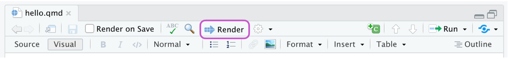

Tutorial: Hello, Quarto
../_tool-chooser.mdOverview
Quarto is a multi-language, next-generation version of R Markdown from RStudio, and includes dozens of new features and capabilities while at the same being able to render most existing Rmd files without modification.
In this tutorial we’ll show you how to use RStudio with Quarto. You’ll edit code and markdown in RStudio just as you would with any computational document (e.g. R Markdown), and preview the rendered document in the Viewer tab as you work.
The following is a Quarto document with the extension .qmd (on the left) along with its rendered version as HTML (on the right). You could also choose to render it into other formats like PDF, MS Word, etc.

This is the basic model for Quarto publishing—take a source document and render it to a variety of output formats.
If you would like to follow along step-by-step in your own environment, follow the steps outlined below.
Download and install the latest release of RStudio (v2022.07):
Be sure that you have installed the
tidyverseandpalmerpenguinspackages:install.packages("tidyverse") install.packages("palmerpenguins")Download the Quarto document (
.qmd) below, open it in RStudio, and click on Render.
Render.
Rendering
Use the  Render button in the RStudio IDE to render the file and preview the output with a single click or keyboard shortcut (⇧⌘K).
Render button in the RStudio IDE to render the file and preview the output with a single click or keyboard shortcut (⇧⌘K).

If you prefer to automatically render whenever you save, you can check the Render on Save option on the editor toolbar. The preview will update whenever you re-render the document. Side-by-side preview works for both HTML and PDF outputs.

Note that documents can also be rendered from the R console via the quarto package:
install.packages("quarto")
quarto::quarto_render("notebook.Rmd")When rendering, Quarto generates a new file that contains selected text, code, and results from the .qmd file. The new file can be an HTML, PDF, MS Word document, presentation, website, book, interactive document, or other format.
Authoring
In the image below we can see the same document in the two modes of the RStudio editor: visual (on the left) and source (on the right). RStudio’s visual editor offers an WYSIWYM authoring experience for markdown. For formatting (e.g. bolding text) you can use the toolbar, a keyboard shortcut (⌘B), or the markdown construct (**bold**). The plain text source code underlying the document is written for you and you can view/edit it at any point by switching to source mode for editing. You can toggle back and forth these two modes by clicking on Source and Visual in the editor toolbar (or using the keyboard shortcut ⌘⇧ F4).

Next, let’s turn our attention to the contents of our Quarto document. The file contains three types of content: a YAML header, code chunks, and markdown text.
YAML header
An (optional) YAML header demarcated by three dashes (---) on either end.
---
title: "Hello, Quarto"
format: html
editor: visual
---When rendered, the title , "Hello, Quarto", will appear at the top of the rendered document with a larger font size than the rest of the document. The other two YAML fields in denote that the output should be in html format and the document should open in the visual editor, by default.
The basic syntax of YAML uses key-value pairs in the format key: value. Other YAML fields commonly found in headers of documents include metadata like author, subtitle, date as well as customization options like theme, fontcolor, fig-width, etc. You can find out about all available YAML fields for HTML documents here. The available YAML fields vary based on document format, e.g. see here for YAML fields for PDF documents and here for MS Word.
Code chunks
R code chunks identified with {r} with (optional) chunk options, in YAML style, identified by #| at the beginning of the line.
```{r}
#| label: load-packages
#| include: false
library(tidyverse)
library(palmerpenguins)
```In this case the label of the code chunk is load-packages and we set include to false to indicate that we don’t want the chunk itself or any of its outputs in the rendered documents.
In addition to rendering the complete document to view the results of code chunks you can also run each code chunk interactively in the RStudio editor by clicking the  icon or keyboard shortcut (⇧⌘⏎). RStudio executes the code and displays the results either inline within your file or in the Console, depending on your preference.
icon or keyboard shortcut (⇧⌘⏎). RStudio executes the code and displays the results either inline within your file or in the Console, depending on your preference.

Markdown text
Text with formatting, including section headers, hyperlinks, an embedded image, and an inline code chunk.

Quarto uses markdown syntax for text. If using the visual editor, you won’t need to learn much markdown syntax for authoring your document as you can use the menus and shortcuts to add a header, bold text, insert a table, etc. If using the source editor, you can achieve these with markdown expressions like ##, **bold**, etc.
How it works
When you render a Quarto document, first knitr executes all of the code chunks and creates a new markdown (.md) document which includes the code and its output. The markdown file generated is then processed by pandoc, which creates the finished format. The Render button encapsulates these actions and executes them in the right order for you.

_footer.md